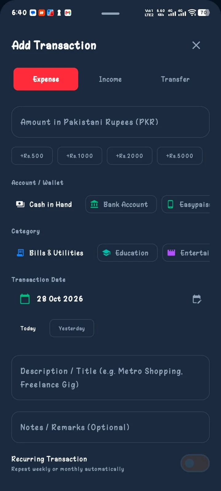
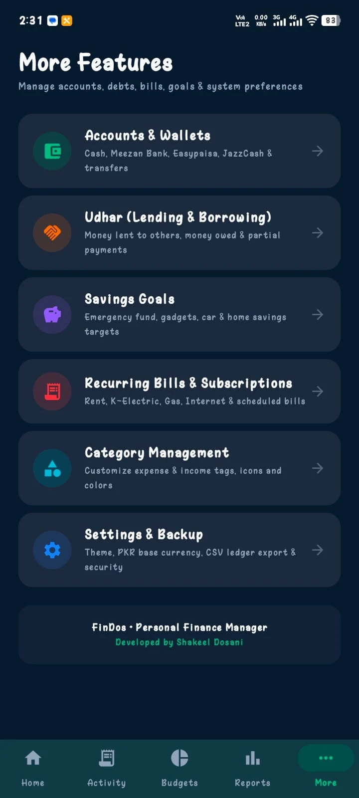
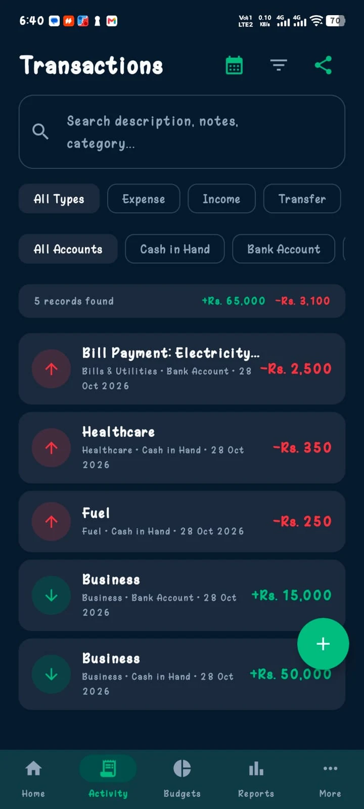
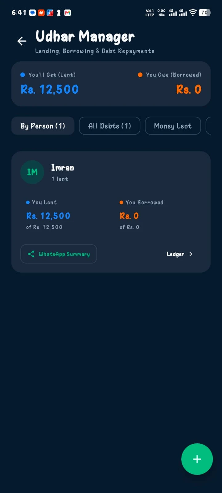
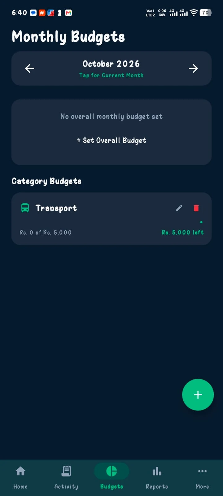
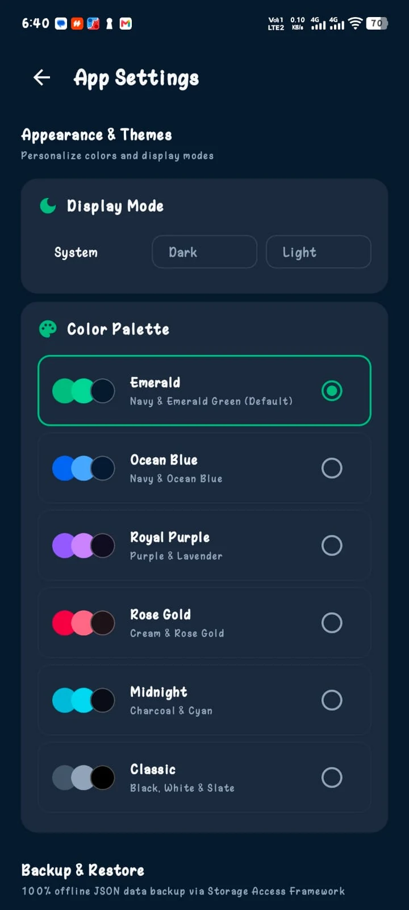

01 / EVERYDAY MONEY
↗
Track every move.
Log income, expenses, and transfers without the clutter. See your activity come together in one simple view.
Income · Expenses · Transfers
Less guessing. More clarity. Track what you earn, understand what you spend, and make room for what matters.

From everyday spending to budgets, recurring bills, savings goals and Udhar, FinDos keeps your financial life organized.
Log income, expenses, and transfers without the clutter. See your activity come together in one simple view.
Income · Expenses · Transfers
Organize cash, bank accounts and digital wallets. Move money between accounts and follow your balances.
Cash · Bank · WalletsSet overall and category budgets, build savings goals, manage recurring bills, and track money lent or borrowed.
Budgets · Goals · Bills · UdharFinDos turns your recorded financial activity into practical, easy-to-understand observations—right on your device.
Insights depend on the financial data you enter. No fabricated transactions or balances.

Real FinDos screens with sample financial activity, straight from Android.


Screenshots show example entries for demonstration. Your balances and insights depend on the data you enter.
Set spending limits, manage recurring bills, log transactions in a few taps and stay on top of the bigger picture.

FinDos lets you personalize your experience with six color palettes and three display modes. Choose a look that feels right for you.
Palettes and display modes are selectable in App Settings.

FinDos is designed to work offline, without requiring a cloud account. Keep your financial records on your device and use the built-in backup and restore tools when needed.
Discover a simpler way to manage your everyday finances with FinDos for Android.
Download the APK from the official FinDos GitHub release. On Android, you may need to allow installation from your browser or file manager.
Questions before getting started? Here's the essentials.
Yes. Download the Android APK from our official GitHub release.
No. FinDos is designed for local, offline-first use without a mandatory sign-in or cloud account.
FinDos includes local backup and restore functionality, along with CSV export for financial records. Keep backup files somewhere safe.
No. FinDos Intelligence provides estimates and observations based on information you record. It does not replace professional financial advice.
Yes. Choose System, Dark or Light display mode, plus one of six color palettes: Emerald, Ocean Blue, Royal Purple, Rose Gold, Midnight or Classic.
Email shakeeldosani02@gmail.com with your suggestions or bug reports.